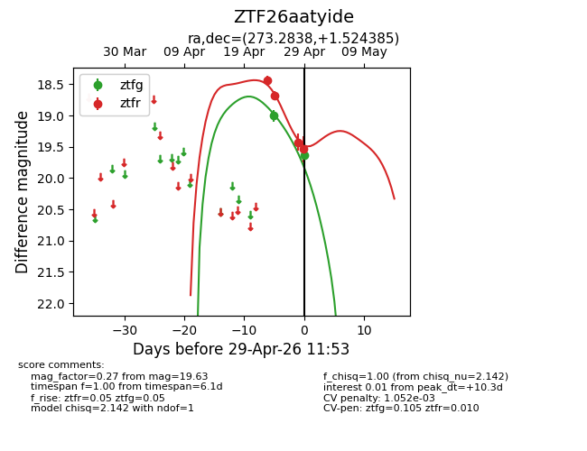
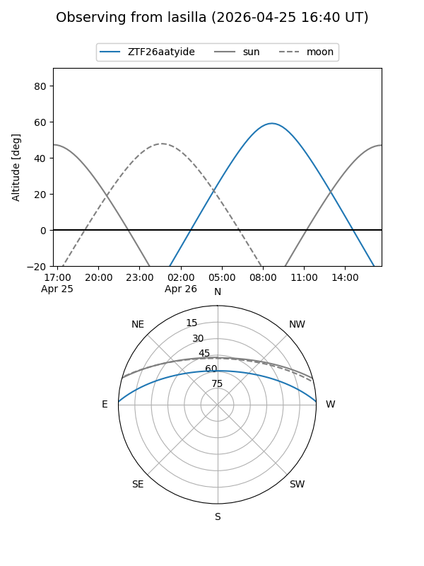
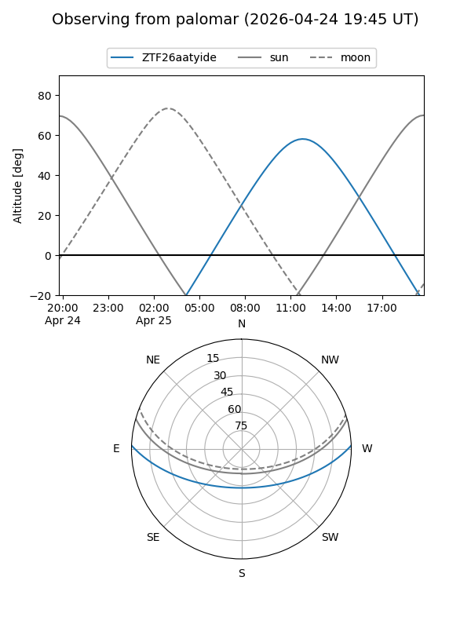
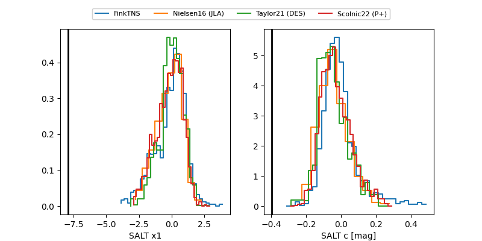

ZTF26aatyide
Target ZTF26aatyide at 2026-04-29 11:57
Aliases and brokers:
FINK: link
Lasair: link
ALeRCE: link
alt names
ZTF26aatyide (ztf,fink_ztf)
Coordinates:
equatorial (ra, dec) = 273.2838,+1.52439
equatorial (HMS+DMS) = 18:13:08.10,+01:31:27.79
galactic (l, b) = (29.9034,+9.21434)
Flags:
likely cv
Photometry:
last ztfg=19.63, ztfr=19.54
2 ztfg, 4 ztfr detections
Lightcurve

Visibility


Additional plots
